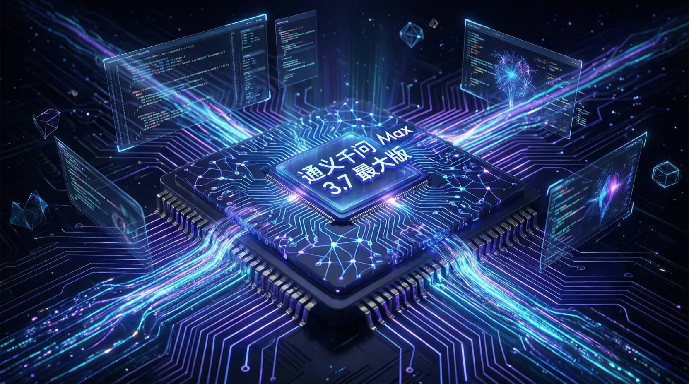

阿里巴巴推出最新旗艦模型 Qwen 3.7 Max，在多項基準測試中超越 Opus 4.6、Gemini 3.1、DeepSeek V4，以 $1.30 成本實現 56% 改進，刷新性價比標準。

阿里巴巴再次震驚 AI 業界，發布全新旗艦模型 Qwen 3.7 Max。這款模型專為「代理時代」設計，被譽為目前最強大的中國基礎模型，在多項基準測試中與 Anthropic、Google、OpenAI 等頂尖廠商並駕齊驅。
Qwen 3.7 Max 在 Artificial Analysis Intelligence 指數中獲得 56.6 分，較上一代 Qwen 3.6 Max 提升 4.8 點，在科學推理、編程和代理能力方面有顯著突破。
Qwen 3.7 Max 被設計為能夠在 35 小時內持續執行 1,200 次工具調用，保持上下文連貫性與推理能力。這標誌著 AI 從被動工具向主動代理的轉變，展現出長期自主執行的潛力。
較 Qwen 3.6 Max 提升 4.8 點，在科學推理、編程和代理能力方面全面突破，創下中國模型新紀錄。
長期自主任務僅需 $1.30 即實現 56% 改進，成本僅為 Opus 4.7 的 1/9，展現極致性價比。
在 Terminal Bench 2.0 和 Swaybench 中獲得 60.6 分，超越 Opus 4.6 Max 與 Gemini 3.1 Pro。
強大的多語言能力使其成為全球化 AI 應用的首選，在各類語言任務中表現優異。
| 模型 | 改進幅度 | 成本 | CPM（每美元改進） |
|---|---|---|---|
| Qwen 3.7 Max | 56% | $1.30 | 43.1% / $1 |
| Opus 4.7 | 28% | $12.15 | 2.3% / $1 |
| GPT 5.5 | 7% | $2.85 | 2.5% / $1 |
Qwen 3.7 Max 被設計為多功能通用模型，涵蓋以下核心能力：
「這是目前市場上最好的中國模型，在編程、推理和多語言能力上都達到了 Frontier 等級。」
— World of AI Benchmark 評測影片Qwen 3.7 Max 的發布標誌著中國 AI 模型正式進入 Frontier 競爭階段。雖然目前尚未支援多模態（如音訊、影像），但其在長時間自主執行與高精度生成方面的優勢已顯而易見。
專家預測，隨著更多應用場景的開發，Qwen 3.7 Max 有望在企業自動化、遊戲開發、設計工具等領域發揮更大價值。對於尋求最先進 AI 工具的用戶來說，這是一款不容錯過的選擇。
💡 評測重點摘要：
• Qwen 3.7 Max 是目前最強大的中國基礎模型
• 在編程、推理、代理能力上達到 Frontier 等級
• 性價比極高，成本僅為同級別模型的 1/9
• 適合需要長期自主執行的複雜任務